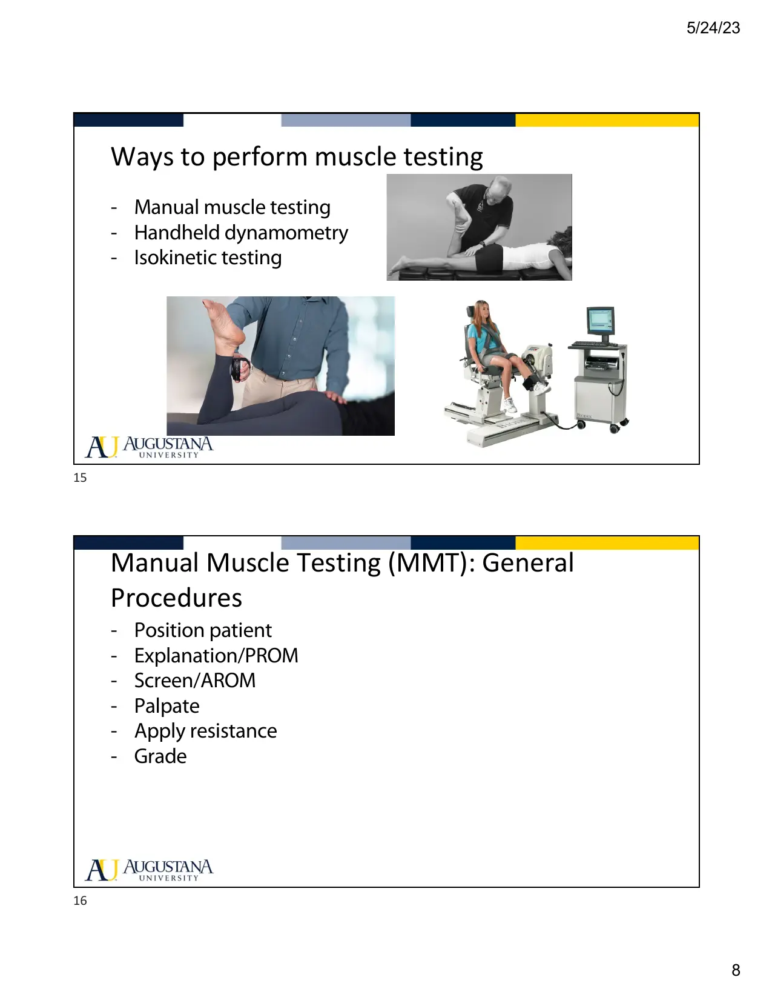

Courses › Physical Therapy Fundamentals › Module 5
Physical Therapy Fundamentals · 6211
Module 5 — Manual Muscle Testing
Topics: 5.1 Muscle Testing the Upper Quarter • 5.2 Lumbar Spine & Lower Extremity Muscle Testing • Sync: grading system + breakouts
📖 How to Use These Notes
- Best used with the lecture playing — keep these open, follow along, and add your own notes as you watch
- Lecture banners mark the start of each topic and run in the same order as the videos
- 🎙 Callouts = direct insights from the instructor's transcript
- ★ Tips = exam-relevant content or things the instructor told you to prepare
- Figures are taken directly from the module's slide decks
- Each topic ends with its own Quick-Reference Glossary
- Written from last year's recordings — if a lecture has been re-recorded or resequenced, Canvas wins
- Watch Dr. Bartley's 20:46 intro lecture in your own Canvas module; Topic 5.2 runs on the PhysioU regional videos
- “The only way to acquire mastery of manual muscle testing is to practice over and over again” — Daniels & Worthingham. That's the whole module in one line
- This week's assignment: record goniometry AND MMT at the shoulder OR hip, calling out the grade and the gravity-minimized alternative
- MMT is the sequel to Module 4's ROM: same PhysioU pages, same joint logic — now with resistance
TOPIC 5.1
Muscle Testing — Vocabulary, Why/When, and the Method
1. Contraction Vocabulary
| Term | Definition | MMT relevance |
|---|---|---|
| Eccentric | Lengthening contraction — applied force EXCEEDS the muscle's force → forced lengthening of the contracting muscle-tendon system | What happens if your break test actually breaks the hold |
| Concentric | Tension rises to meet a stable resistance while the muscle shortens through range | The “active resistance testing” variant resists this |
| Isometric | Contraction WITHOUT movement | The MMT contraction — you position, they hold, you press |
| Isokinetic | Machine-controlled constant speed (e.g., Cybex) — patient pushes, machine caps degrees/second | Lab + sports settings; big footprint |
| Open-packed position | Least congruency/compression; capsule + ligaments lax, joint play maximized | Test HERE — keeps inert tissues from adding pain or inhibition (full treatment in MSK coursework) |
2. Why, When, Where, How
- Why: identify weakness/imbalance · treatment planning · baseline + progress (objective markers motivate patients too) · functional capacity · compensation patterns · objective data for colleagues and third-party payers · research/EBP. When: initial eval, planning, progress checks, return-to-sport clearance thresholds, imbalance workups, discharge outcomes. Sync's concrete list: neuro events (SCI, CVA, lumbar radiculopathy), ortho (post-op ACL, subacromial pain, ankle sprain), fall/balance risk (assistive-device users, Parkinson's). Where: everywhere — acute care, inpatient rehab, SNF, clinic, home health, fitness/sports/tactical.

- How — three families: MANUAL (isolate one muscle, or grade the functional group behind a joint motion); functional muscle testing (mimic the functional demand — clearer strength↔disability link, useful when MMT isn't possible; limited by positioning, equipment, and other body systems in play); MECHANICAL (handheld dynamometry, isokinetic).
3. The Procedure
- Position (standardized!) → explain AND demonstrate → PROM first — a joint without full passive range cannot give a valid mid-range/open-pack test → screen AROM through the full available range against gravity → palpate the target muscle → if full AROM is present, position the joint and gradually apply isometric resistance directly opposite the muscle's line of pull, coaching best effort → grade. Two styles: break test (attempt to break the isometric hold — the Fundamentals standard) vs active resistance testing (resist through range; more skill). Hold ≥5 seconds, compare to the uninvolved side, keep your sequence consistent, bilateral, test/retest.
4. Grading (Dutton Table 12.2 — sync's full + Fundamentals tables)
Dutton Table 12.2. The BOLD grades are the ones the sync deck marks “what we will learn/assess in Fundamentals” — the rest of the scale exists and you should recognise it, but it arrives later in the curriculum.
| Grade | ROM | Gravity | Resistance |
|---|---|---|---|
| 5 Normal | Full | Against | Maximum |
| 4+ Good+ · later | Full | Against | >Moderate <Maximum |
| 4 Good | Full | Against | Moderate |
| 4− Good− · later | Full | Against | >Minimum |
| 3+ Fair+ | Full | Against | Minimum |
| 3 Fair | Full | Against | NONE — against gravity is the whole test |
| 3− Fair− · later | >50% but <full | Against | None |
| 2+ Poor+ | Full | MINIMIZED | Minimum |
| 2 Poor | Full | Minimized | None |
| 2− Poor− | >50% but <full | Minimized | None |
| 1 Trace | Palpable contraction <50% — no joint movement | Minimized | None |
| 0 None | No palpable contraction | Minimized | None |
5. Validity, Reliability, and What Bends the Numbers
| Domain | The list |
|---|---|
| Validity requires | Maximum contraction elicited (their max effort — some neuro conditions preclude it, which is itself a contraindication) · PROM/AROM comparison · open-packed position · muscle somewhat shortened · standardized positions · proper stabilization · force at the right spot · ≥5-second hold · side-to-side comparison · account for age/size/training (the norms came from “the average adult male”) |
| Reliability | Intra-tester > inter-tester · proximal muscles > distal · upper quarter > lower quarter (big LE muscles can out-muscle a smaller tester) · tester experience |
| Influencing factors | Age · contraction type · muscle size · speed · training/familiarity (an isolated hamstring curl is foreign to many) · joint position · fatigue · nutrition · motivation · pain · body type · limb dominance |
| Precautions / contraindications | Pain + inflammation · post-op protected tissues + sutures · abdominal surgery · acute care · cardiovascular conditions (Valsalva → blood-pressure swings) · excessive-fatigue risk: multiple sclerosis, Guillain-Barré |
| Limitations of MMT | Functional relevance · non-linear scale · variability over time · inter-rater and test-retest reliability · concentric-only framing · not every patient fits the scale |
- Pain, cramp, or spasm mid-test: if the patient can still give best effort, continue and NOTE the complaint; if not, stop and note why. And know your expected patterns — the sync drills what you'd anticipate after CVA, ACL reconstruction, chronic shoulder pain, and SCI, plus the common substitutions patients use to “trip you up.”
📱 Required PhysioU — Topic 5.1 (upper quarter MMT)
Topic 5.1 — Quick-Reference Glossary
| Term | Definition |
|---|---|
| MMT contraction | Isometric — hold, don't move |
| Break test | Try to break the isometric hold (the standard here) |
| Open-packed position | Lax capsule/ligaments — inert tissues stay quiet |
| PROM first | No full passive range → no valid test |
| Line of pull | Resistance goes directly opposite it |
| 3 Fair | Full ROM against gravity, zero resistance — the pivot grade |
| ≥5-second hold | Fatigue/neuro window for the break attempt |
| Intra > inter | Same tester over time beats different testers |
| Valsalva caution | Cardiovascular precaution — BP swings under strain |
TOPIC 5.2
Lumbar Spine & Lower Extremity MMT (PhysioU topic)
- Same why/when/how as 5.1 — but the leg and trunk bring big, powerful muscles, so YOUR position matters as much as the patient's: reliability drops in the lower quarter partly because testers get out-muscled. Set up your base of support, use body weight over arm strength, stabilize proximally, and expect the gravity-minimized alternatives to matter more (side-lying hip work, and remember the soleus-style knee-position tricks from Anatomy M5).
📱 Required PhysioU — Topic 5.2 (lower quarter MMT)
SYNC SESSION
Grading Applied + Breakouts
The sync walks WHEN/WHERE/WHY/HOW, then the grading tables (folded into Topic 5.1 above), then breakout rooms: watch an assigned patient video, choose the muscle and plane of motion that achieve the functional task, and plan the complete test.
| Breakout field | What a complete answer includes |
|---|---|
| Muscle + plane of motion | Which muscle/group produces the functional task in the video |
| Patient position — BOTH versions | Against-gravity AND gravity-minimized setups |
| Joint stabilization | What you fix so the motion is pure |
| Palpation landmarks | Where your fingers confirm the right muscle is firing |
| Position of the PT | Base of support, line of resistance opposite the line of pull |
| Record the grade | Number + what it means, out loud |